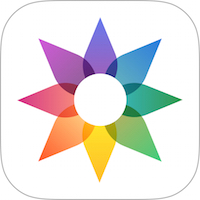
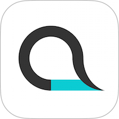

Apps for iPhone and iPad
Metapho

A simple and clean viewer for photo metadata such as file size, camera model, ISO, shutter spead, GPS location, and more. Metapho app extension lets you check and remove metadata anywhere with iOS share sheet.
Atelier

Atelier is an app for drawing and painting, striking the perfect balance between simplicity and functionality.
SyncScore – Classical music with score

50+ Carefully curated tracks of various SyncScore apps. “SyncScore : Best Collection” is the ultimate hub for all SyncScore apps.
Tocsin

Tocsin is a motion detecting alarm integrated with Guided Access. Turn on iOS Guided Access and initiate Tocsin. Once sudden movement of the device is detected, Tocsin makes audio and visual alert.